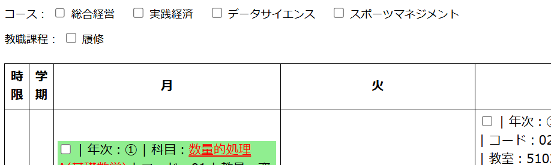
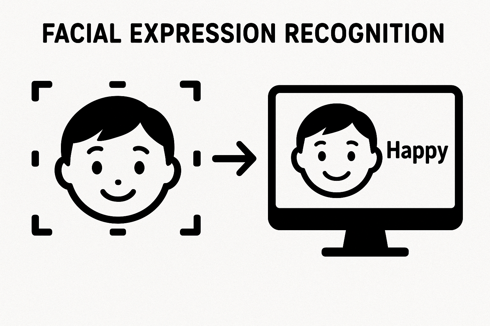

Welcome! ようこそ（このサイトは、生成AIで作成しました）
スライド「データサイエンスコース履修ガイダンス2026」スライド「ITリーダ塾：G検定ガイダンス2025」
みんなが生成AIを使いこなせて人生を楽しめる社会をめざします
「生成AI＋デザイン思考」による課題解決をチームで体験

2026年度1年次生用（β版）
2026年度1年次生用

Teachable Machineで学習しました；学習データはFER-2013の一部を使用